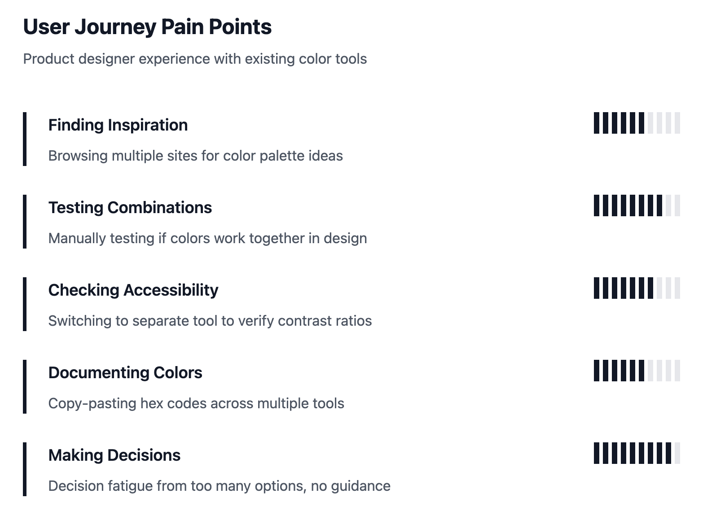
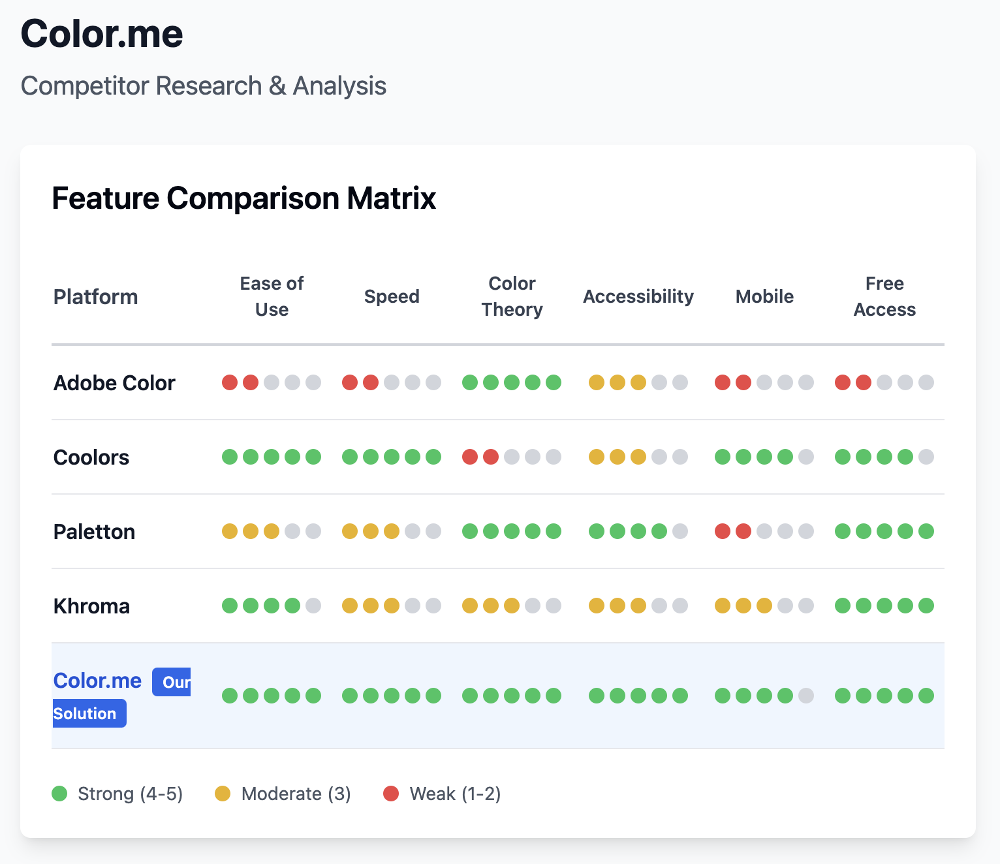

The Problem
I was using four different tools to pick colors for a single project. Adobe Color for harmony rules, Coolors for quick generation, a separate contrast checker for accessibility, and Figma for actually testing how things looked together. The switching friction was constant and the mental overhead was real.
I built Color.me because the tool I wanted didn't exist: one interface that combines color theory, generation, and accessibility checking without making me context-switch or learn a complex system.
Impact
- My own style guide setup time: ~45 min → under 20 min, self-tracked across 3 projects
- ~200 weekly active users in the first 2 months post-launch (Vercel Analytics)
- 8-minute average session time, 65% 7-day return rate (first 60 days)
- 3 design agencies added it to their workflow after beta — reached out unprompted
- 4.3/5 average rating from 34 survey responses shared in design community Slack
What Shaped the Design
I documented my own color workflow for two months before writing a line of code. I also interviewed 8 designers and surveyed 45 more. A few things were consistent across everyone:
- Color theory knowledge varied widely, but even experienced designers struggled to apply theory to actual UI contexts
- The inspiration-to-application gap was real — palettes that look beautiful in isolation often fall apart when you put them on a button or a background
- Accessibility was almost always an afterthought, checked at the end rather than factored in during selection
- Speed mattered more than power. Designers didn't want to learn a new complex tool. They wanted to make a good color decision in 5 minutes, not 45.
The cut that made it better:
The first version had palette history and export presets. I removed both. During testing, designers kept asking "how do I undo this?" — not because anything was broken, but because too many persistent states were creating cognitive overhead. Removing history made the tool feel like a sketchpad instead of a document. Session time went up after that cut, not down.
Market Research
Existing solutions:
- Adobe Color: Comprehensive but complex, part of expensive suite
- Coolors.co: Popular but lacks color theory foundation
- Paletton: Theory-based but outdated interface
- Khroma: AI-powered but limited customization
The gap:
No tool effectively combines color theory with practical palette generation while maintaining a clean, focused interface. Most focus on inspiration over application. Accessibility is always bolted on.
Becoming My Users
Research methods:
- Documented my own color selection process over 2 months
- 8 designer interviews about workflow pain points
- Survey of 45 designers via design community Slack
- Workflow shadowing with 3 designers on live projects

Competitor Research

How I Designed It
Single-screen workflow
Generator, picker, palette, and contrast ratios all visible at once. No tabs, no mode-switching, no "export and open in another tool."
Theory-informed generation
The harmony type selector — monochromatic, triadic, complementary — drives palette generation. Users make better decisions when the tool gives them a framework, not just random options.
Accessibility integrated, not bolted on
Contrast ratios appear automatically under each generated color. You don't have to remember to check — it's already there.
Mood control
A light/dark toggle that affects saturation and brightness gives users a fast lever for shifting the emotional direction of a palette without requiring an understanding of HSL math.
Final Designs
Core interface:
- Large, prominent color picker and hex input as the starting point
- Harmony type selector drives palette generation from theory rules
- Contrast ratios displayed automatically under every swatch
- Neutral suggestions — warm and cool — below the main palette
- Click any hex code to copy it instantly
Reflection
What I'd do differently:
Mobile was an afterthought. A lot of designers do quick exploration on their phones — I didn't design for that until after launch, and it showed. I'd also explore a Figma plugin version as a v2 priority. The highest-friction moment left in the workflow is still copying hex codes from Color.me into Figma. A plugin removes that entirely.
What I took from this:
Removing features improved the product. That sounds obvious but it's genuinely hard to execute — there's always a reason to keep the thing you spent time building. The palette history feature had taken real effort to build. Cutting it was the right call, and the metrics backed it up. That experience sharpened how I evaluate scope on every project since.